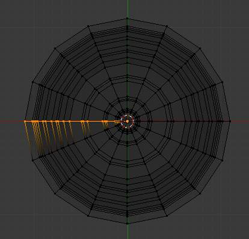
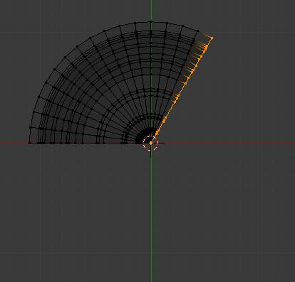

Spin¶
参考
Use the Spin tool to create the sort of objects that you would produce on a lathe (this tool is often called a “lathe”-tool or a “sweep”-tool in the literature, for this reason). In fact, it does a sort of circular extrusion of your selected elements, centered on the 3D游标, and around the axis perpendicular to the working view...
- The point of view will determine around which axis the extrusion spins...
- The position of the 3D游标 will be the center of the rotation.
Here are its settings:
- Steps
- Specifies how many copies will be extruded along the “sweep”.
- Dupli
- When enabled, will keep the original selected elements as separated islands in the mesh (i.e. unlinked to the result of the spin extrusion).
- Angle
- specifies the angle “swept” by this tool, in degrees (e.g. set it to 180 for half a turn).
- Center
- Specifies the center of the spin. By default it uses the cursor position.
- Axis
- Specify the spin axis as a vector. By default it uses the view axis.
例子¶
{kind=link}
Glass profile.
First, create a mesh representing the profile of your object. If you are modeling a hollow object, it is a good idea to thicken the outline. Fig. Glass profile. shows the profile for a wine glass we will model as a demonstration.
Go to the 编辑模式 and select all the vertices of the Profile with A.
We will be rotating the object around the cursor in the top view,
so switch to the top view with Numpad7.
{kind=link}
Glass profile, top view in 编辑模式, just before spinning.
Place the cursor along the center of the profile by selecting one of the vertices along the center, and snapping the 3D游标 to that location with . (Fig. Glass profile, top view in 编辑模式, just before spinning.) shows the wine glass profile from top view, with the cursor correctly positioned.
Click the Spin button. If you have more than one 3D视图 open, the cursor will change to an arrow with a question mark and you will have to click in the window containing the top view before continuing. If you have only one 3D视图 open, the spin will happen immediately. Fig. Spun profile shows the result of a successful spin.
Angle¶

Spun profile using an angle of 360. |

Spun profile using an angle of 120. |
{kind=link}
{kind=link}
{kind=link}
{kind=link}
Merge Duplicates¶
{kind=link}
Duplicate vertices.
The spin operation leaves duplicate vertices along the profile.
You can select all vertices at the seam with Box select B shown in
Fig. Duplicate vertices. Seam vertex selection and
perform a Remove Doubles operation.
Notice the selected vertex count before and after the Remove Doubles operation
Vertex count after removing doubles. If all goes well, the final vertex count
(38 in this example) should match the number of the original profile noted in
Mesh data - Vertex and face numbers. If not,
some vertices were missed and you will need to weld them manually. Or, worse,
too many vertices will have been merged.
Note
Merging two vertices in one
To merge (weld) two vertices together, select both of them by Shift-RMB
clicking on them. Press S to start scaling and hold down Ctrl
while scaling to scale the points down to 0 units in the X, Y and Z axis. LMB
to complete the scaling operation and click the Remove Doubles button in
the Tool shelf in 编辑模式 (also available with W ).
Alternatively, you can use W from the same Specials menu
(or Alt-M). Then, in the new pop-up menu, choose whether the merged vertex will
be at the center of the selected vertices or at the 3D游标.
The first choice is better in our case!
Recalculate Normals¶
All that remains now is to recalculate the normals to the outside by selecting all vertices,
pressing Ctrl-N and validating Recalc Normals Outside in the pop-up menu.